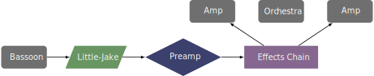

This piece was written in 2023 for Benjamin Bradshaw and was premiered on March 14, 2023. It is a suite of seven movements portraying the creation myths of various cultures. The instrumentation for this piece is the standard orchestra, and it includes some extended techniques for the orchestral parts. This piece can be obtained by contacting the composer at his website.
This piece calls for numerous effects, some of which have descriptive names like "sun effect" that require the performer to create their own combination of effects to capture the spirit of the section. There are also more prescribed effects that include a delay, pitch shifter, distortion, reverb, and a looper. The pitch shifter is used for an octave higher and lower, a perfect fifth lower, and a minor third higher than the bassoon sound. An auto wah and flanger would be useful to help create a didgeridoo effect, as well as the other descriptive effects. Because of the large number of effects, it is recommended to use a multieffects pedal that has a looper. This will greatly simplify the stage setup. Using multiple amps will also help the bassoon sound diffuse evenly with the orchestra.
The setup for this piece is shown below. 
The technical aspects of this piece could be difficult for undergraduate students, but much of it would be possible for more advanced students. Two of the movements include very fast scalar passages and upper register passages, but the other movements are more accessible for younger students. The electronic part can be tricky, as there are some very fast pedal changes that trigger a large number of effects. Some movements required six footswitches on the multieffects pedal used in the premiere. Having separate stomp boxes would increase the movement required for the effect changes. Overall, this piece is on the edge of the ability of most undergraduate students, but certain movements would be possible.
This piece mixes avant-garde extended techniques, dissonant writing, and folk tunes in a way that will be well received by most audiences. There are descriptive program notes for each movement, helping the audience to attach meaning to the more experimental and dissonant sections.
©2025 by Benjamin Bradshaw
Logo ©2025 by Hannah Bradshaw